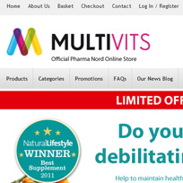

- Email:
- howdy@joeyemery.com
- Web:
- JoeyEmery.com
- Twitter:
- @CuriouslyOdd
- Facebook:
- CuriouslyOdd
- Phone:
- Broken! :(
- Address:
- 2 Gleneagles Court, NE25 9NA
What people are saying about me:
- "Joey is a confident and enthusiastic worker, we were surprised that he had a solution for any problem that presented itself, even those that seemed unsolvable."
- "After working with Joey for a year I can tell he's going to go far in the development industry. He's the most 'cutting-edge' technology nerd I know."
Currently: freelancing
Although I love freelancing it's a little insecure. I'd love to be working in an agency with like minded people!
Hey, I'm Joey. A 20 year old web developer and designer.
I've been doing web development and design for around 6 years and, although I only have 2 years industry experience, I believe myself to be very capable at both.
I started on development a few years before I went to college, mostly coding in PHP and MySQL and working on very basic websites with very little functionality. At college I met my now best friend who was also equally passionate about learning web development so we partnered up, going home after college every night and learning as much as we could to later teach each other the next day.
It wasn't long before we could both manage to code fairly complex applications and websites when we hit a dead end, neither of us could make our websites look very pretty. It was then when I decided I'd have a go at design.
For whatever reason designing came very easy to me, which was surprising as I've never been great at art. I spent the remainder of college perfecting my development skills while mostly focusing on teaching myself to design.
Straight after college I landed a job with Armadillo Creative as a developer. I was lucky enough to be working with some incredibly capable developers who helped me fully grasp how to develop complicated websites for fairly large clients. On top of everything I learned code-wise I also had to put my comminucation skills at test as I was personally handed my own clients to work with. This involved everything from the initial briefing and planning to ensuring everything was perfect for them. I always had a nice relationship with all of my clients and they always seemed very impressed not only with their finished product, but the customer care and service I strived to provide.
After my time with Armadillo Creative came to an end I landed a job with brand new London startup Givey. I moved down to London and worked as the only in house developer and designer.
Available for FreelanceCurrently Freelancing in Newcastle
I have always been very passionate about web development and design, and in my dry periods of freelancing I'm always trying to build the next 'big thing'. I have started up a few small businesses, none of which went so well, but I learned a lot in the process.
I'm often referred to as the 'cutting-edge guy' because I'm constantly learning about the newest technologies and applying them into my work. This ranges from new Database models to rest APIs (Facebook/Twitter/etc).
I've been told I work incredibly well as part of a team but if there's a lot of work to be done I can easily jump straight into it with earphones in and get it out of the way.
- Most recently played tracks
- Instead of talking about what my favourite music is (it changes on a daily basis) I thought it would be better to just show you. Please note there may be some embarrassing ones in which I'll deny ever listening to.
I chose not to go to university simply because I could not see myself benefitting from it, instead I jumped straight into a development job!
- GCSEs
- ICT: A
- English Language: B
- English Literature: B
- Business Studies: B
- Mathematics: C
- Physics: C
- Biology: C
- Chemistry: C
- Music: D
- A-Levels
- Level 3 Diploma in business oriented computing: Pass
- (Equivalent of 3 A-Levels)
Whitley Bay High School
In my four years at WBHS I studied all the required subjects as well as ICT, Music and Business Studies to GCSE level.
Gateshead College
My two years at Gateshead College were spent studying a multitude of different computer and business related subjects. This ranged from graphic and web design to writing detailed business plans. There was also a vast communication side to the entire course in which we were constantly doing presentations and talks in front of a large audience of students, lecturers and outside businesses.
I know it sounds crazy, but I'm a hybrid (developer/designer). Below are a list of my key skills. (There are others, for example: I've mastered the hula hoop).
XHTML/CSS - I'm incredibly confident with both of these languages and always produce valid code for every site.
HTML5 - I love HTML5, there's nothing more to say.
Javascript/Ajax - Javascript is my favourite language. I use all the major javascript libraries, unless I fancy writing some pure JS. If I don't know a library it'll usually take me a few hours to master it.
Javascript Libraries - I love Javascript libraries, especially jQuery. Wherever possible I use this along with pure Javascript for most of the websites I create. Anything I can't already achieve using jQuery is usually solved very quickly.
PHP/MySQL - My chosen languages for development, I have been using these for a good few years and feel incredibly confident with both of them, including MVC architectures and most popular frameworks (CodeIgniter/Drupal/Joomla/Wordpress/Etc).
Ruby (Rails) - I'm very new to Ruby on Rails and just grasping the basic concepts, I would never develop a website in this at the moment, but I'm actively learning.
Photoshop/Fireworks - Although I favour Photoshop, I am equally skilled with Fireworks. I use either one of these programs to design most of my websites, other times I jump straight into code.
Illustrator - I'm not a huge fan of Illustrator, but can use it (but only when neccessary!).
After Effects - I have never used After Effects within a business but actively learn more and more about it in my spare time.
CouchDB/MongoDB/Oracle - I'll use these when they're more appropriate than using MySQL (MongoDB has some lovely location-based queries) and can do so quite easily.
UI/UX Designer
Performance Horizon
Period: December 2012 - May 2013
Performance Horizon is an affiliate networking web application. My role was to create new, intuitive and beautiful interfaces for all exposed data from the API. A major task of mine was to revamp the entire 'dashboard', giving it not only a nicer look, but improving the experience for the user. I also worked on a few in house tools to speed up production.
Web Developer & Designer
Givey.co.uk
Period: February 2012 - July 2012
Givey was a new, London-based, startup when I joined them. The aim was to make an easy, mobile friendly, way to donate to any charity but with a social twist (think Facebook meets JustGiving). For the first few months I was the only developer within the organization (there was also a freelance designer) and built the entire demo website which later secured enough investment to start building an API which would later sit under a more powerful website.
Junior Web Developer
Armadillo Creative
Period: September 2010 - September 2011
Armadillo was my first taste of working within a web agency. I learned a lot of things, most of which I still use today. I worked with quite a few big clients, as well as some small ones and also helped develop the framework and CMS in which all future sites were based on.
Here are a few of my most recent pieces, if you want any further information in what I did for each one, feel free to contact me!
Quick note, they're not in any specific order, just a collection of the most recents.
-
Multivits 
I love talking! Feel free to drop me a message below, although I do prefer phone calls.
Thank you!
Your message has been successfully sent, I'll be in touch soon!
Feel free to get in touch if you have any questions about me, my work or would just like a friendly chat. Although my favourite means of communication would have to be phone calls (It feels more personal) you can also hit me up on any of the below, or just submit the form to your left and I'll get back to you as soon as I can.
Phone Number: Broken! :(
Email Address: howdy@joeyemery.com
Twitter: @CuriouslyOdd
Facebook: CuriouslyOdd

{kind=link}
{kind=link}
{kind=link}